Project Overview

The goal of this project was to redesign the website for the local business 22 Club, a snooker and pool venue. The redesign focused on improving usability, readability, and accessibility for users searching for information about facilities, membership, and location.
To avoid copyright issues when presenting the work publicly, the redesigned concept was renamed 01 Club. The project focused on UX research, interface design, and front-end development, while the existing administrative portal was excluded from the redesign scope as it falls outside a front-end UX role.
View ProjectServices Used
Each tool served a defined role across the design and development workflow.
Understanding The Problem
The original 22 Club website had not been updated to meet modern usability or accessibility standards. For a venue that depends on walk-in visitors and membership renewals, the site was failing at its most basic job: helping people find opening hours, location, and pricing without frustration. A brief audit revealed multiple compounding issues that made the experience difficult for a wide range of users.
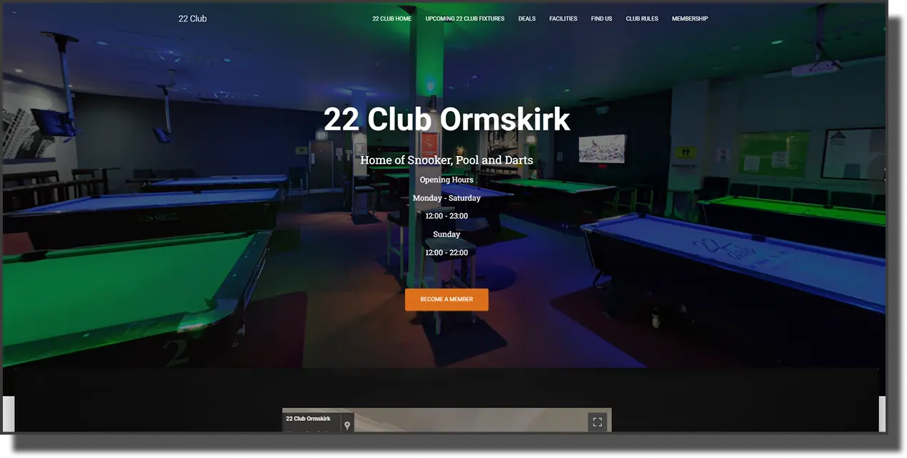
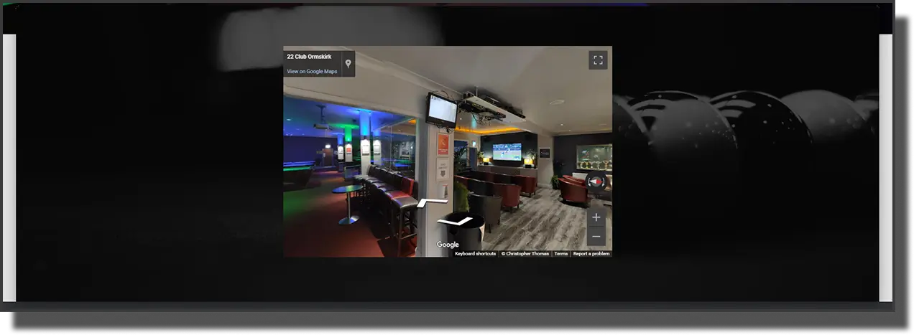
The "Find Us" page only displayed a Google Maps embed without clear section labelling.
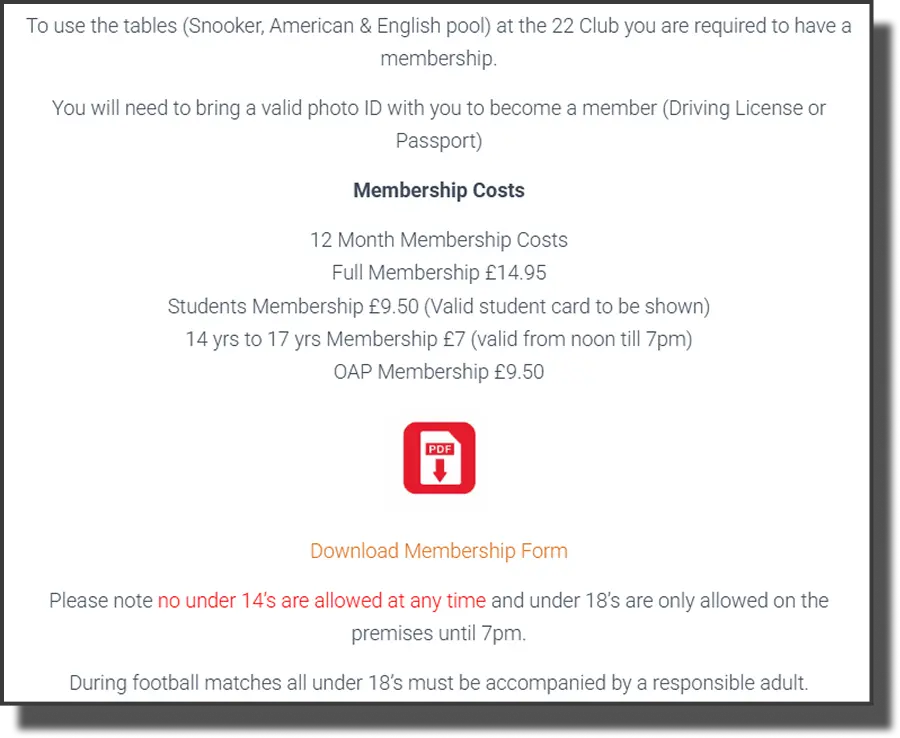
Typography and readability challenges from large sections of centre-aligned text, reducing scannability.
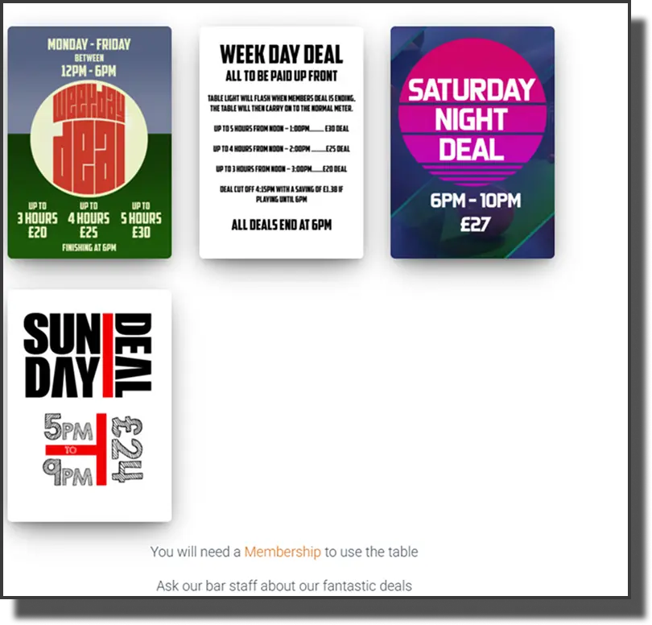
Background and text colour do not meet AA or AAA requirements. No content structure to indicate what images represent.
Other key issues identified include:
- Mobile responsiveness — navigation elements became cramped on smaller screens, reducing usability
- Content hierarchy — facilities information appeared visually cluttered, reducing clarity
- Inaccessible pages — some pages contained minimal or empty content, creating dead-end navigation paths
These findings highlighted the need for clearer structure, stronger visual hierarchy, and improved accessibility.
Research & Inspiration
Competitive analysis was conducted across several local venue and leisure centre websites to identify UX patterns that worked well for users with similar goals — finding information quickly and deciding whether to visit. The analysis was focused on real decision-making journeys: how long did it take to find opening hours? Was membership pricing visible without clicking through multiple pages? Were facilities presented clearly?
Analysis Observed
- Strong visual hierarchy
- Clearly separated content sections
- High-quality imagery aligned with content
- Consistent typography
- Accessible interactions such as facilities and membership
- Responsive layouts for mobile devices
Decisions Informed
- Improved navigation contrast
- Consistent typography with left-aligned text
- Cleaner section structure
- Improved spacing and visual hierarchy
- Accessible colour contrast combinations
- Consistent image placement across the layout
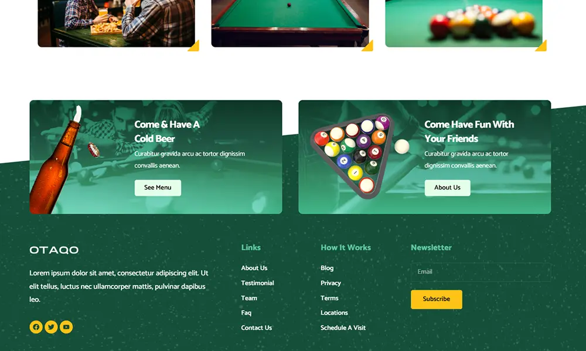
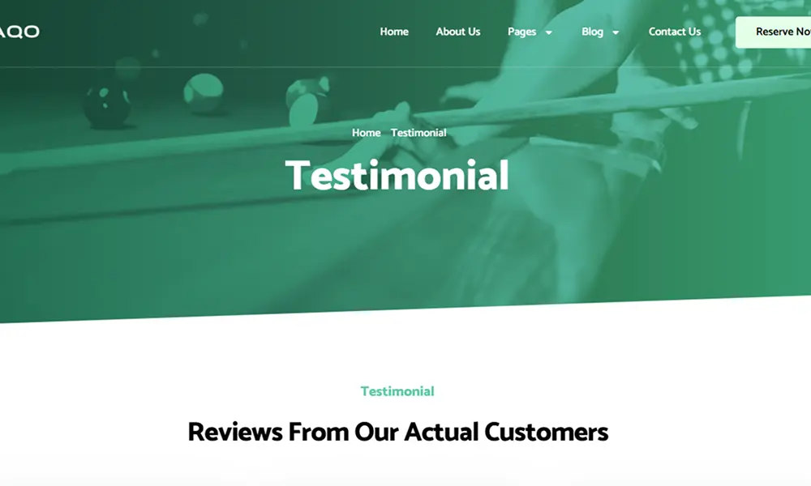
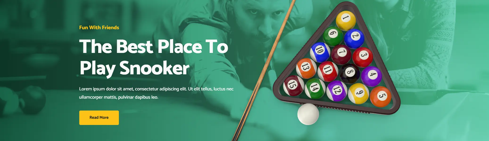
User Persona
A persona was developed from findings collected through 6 customer interviews and web analytics review. The persona represented the most common visitor profile for the club — a local user who is already somewhat familiar with the venue but needs quick access to practical info before deciding to visit or join. This framing was important: the redesign was not trying to sell to strangers, but to remove friction for users already interested.
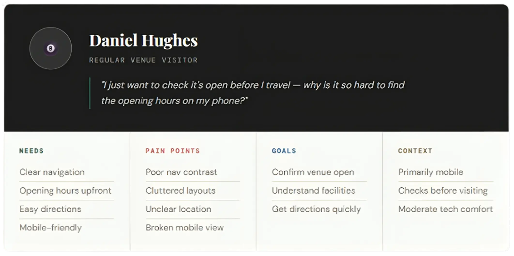
Designing with Daniel as the reference point kept every decision grounded. Would Daniel be able to find the membership page without hunting through the nav? Could he confirm the opening times on his phone quickly? These questions drove decisions about hierarchy, navigation depth, and mobile layout throughout the project.
Ideation — Crazy 8's
Before opening Figma, eight layout concepts were generated by hand using the Crazy 8's method — one minute per sketch, no erasing, no overthinking. This exercise surfaced a range of structural approaches: a full-screen image hero, a tile-based facilities grid, a sticky sidebar nav, a stripped-back content-first layout. Comparing the sketches against Daniel's primary goals made it clear that a clear hero, prominent navigation, and left-aligned content sections were the right direction to pursue.
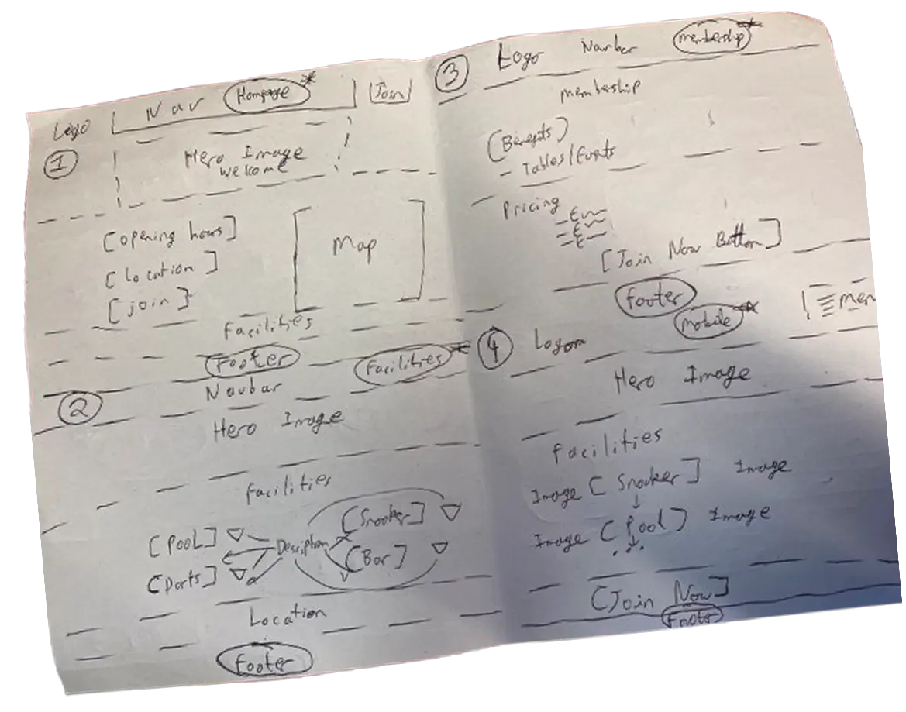
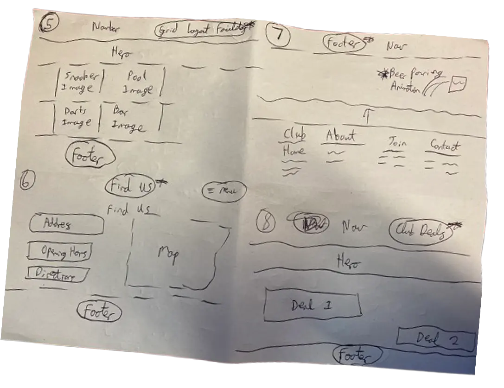
Low-Fidelity Wireframes
Figma wireframes were produced to test the proposed layout and information hierarchy before investing time in visual design. At this stage, the primary concerns were: could a first-time visitor find opening hours and location quickly? Was the navigation structure clear enough to avoid dead-end paths? The lo-fi work directly addressed the problems identified in research — cramped navigation, poor content structure, and missing section labels.
High-Fidelity Prototype
The high-fidelity prototype refined the visual direction of the redesign. A dark navy navbar replaced the original low-contrast header, and a full-width hero image was used to immediately communicate the venue atmosphere. Typography was shifted from centre-aligned blocks to left-aligned columns to improve scannability. All colour pairings were tested against WCAG AA and AAA requirements before the prototype was finalised for development.
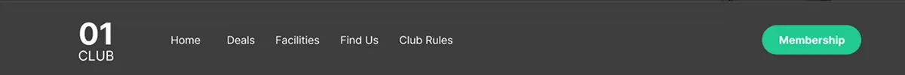
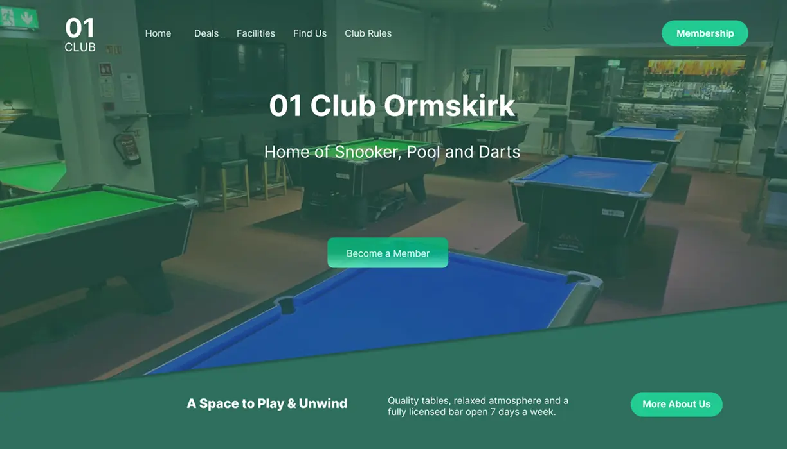
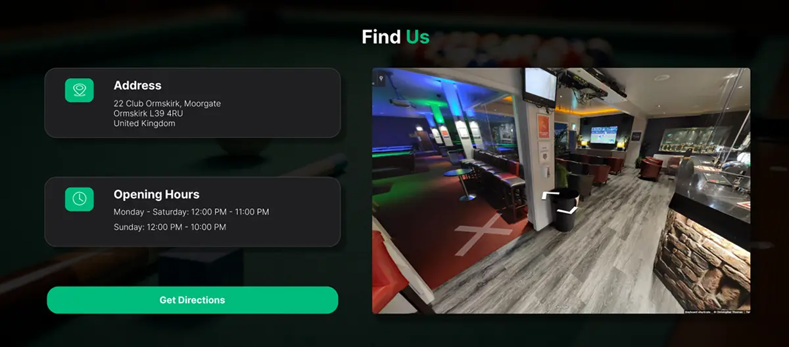
Front-End Development
The redesigned site was built entirely in HTML5, CSS3, and vanilla JavaScript. Semantic landmark elements replaced the original site's heavy use of generic containers, making the page structure meaningful to screen readers and search engines alike. CSS custom properties were used to manage the colour system, ensuring contrast decisions made in the prototype could be applied consistently across every component. The mobile layout was built mobile-first, with the desktop layout layered on top using min-width media queries.
- HTML5Semantic structure
- CSS3Style, grid
- JavaScriptScroll, navigation
- ✓Semantic HTML
Heading hierarchy and landmark elements for screen reader support.
- ✓Keyboard Navigation
Full Tab navigation.
- ✓Image Alt Text
Descriptive alt attributes on all images.
- ✓WCAG AA/AAA
All focus and colour pairs tested and verified.
<!DOCTYPE html>
<html lang="en">
<head>
<meta charset="UTF-8" />
<meta name="viewport" content="width=device-width, initial-scale=1.0" />
<title>01 Club</title>
<meta name="description" content="01 Club is a social snooker and pool club offering professional tables, darts, and a fully stocked bar.">
<link rel="preconnect" href="https://fonts.googleapis.com" fetchpriority="high" />
<link rel="preconnect" href="https://fonts.gstatic.com" crossorigin fetchpriority="high" />
<link href="https://fonts.googleapis.com/css2?family=Bebas+Neue&family=Barlow:wght@300;400;500;600;700&display=swap" rel="stylesheet" />
<link rel="stylesheet" href="css/style.css" />
<link rel="stylesheet" href="css/grid.css" />
</head>
<body>
<!-- Navigation -->
<nav class="site-nav">
<div class="nav-inner">
<a href="index.html" class="nav-logo">
<span class="logo-number">01</span>
<span class="logo-word">Club</span>
</a>
<ul class="nav-links">
<li><a href="index.html">Home</a></li>
<li><a href="club-deals.html">Deals</a></li>
<li><a href="index.html#facilities">Facilities</a></li>
<li><a href="index.html#find-us">Find Us</a></li>
<li><a href="club-rules.html">Club Rules</a></li>
</ul>
<a href="membership.html" class="nav-cta" aria-current="page">Membership</a>
<button class="hamburger" aria-controls="mobile-menu" aria-expanded="false" aria-label="Open navigation menu">
<span></span><span></span><span></span>
</button>
</div>
</nav>
<!-- Hero -->
<header class="hero home-hero">
<img src="images/hero_banner_container.jpg" alt="01 Club Ormskirk interior" fetchpriority="high" />
<span class="hero-overlay" aria-hidden="true"></span>
<div class="hero-content">
<h1>01 Club Ormskirk</h1>
<p>Home of Snooker, Pool and Darts</p>
<div class="hero-hours">
<span class="hero-hours-title">Opening Hours</span>
<span class="hero-hours-line">Mon–Sat: 12:00 PM – 11:00 PM</span>
<span class="hero-hours-line">Sun: 12:00 PM – 10:00 PM</span>
</div>
<a href="membership.html" class="hero-cta">Become a Member</a>
</div>
<aside class="hero-tagline">
<p class="tagline-heading">A Space to Play & Unwind</p>
<p class="tagline-desc">Quality tables, relaxed atmosphere and a fully licensed bar open 7 days a week.</p>
<a href="#facilities" class="tagline-btn">More About Us</a>
</aside>
</header>
<main>
<!-- Find Us -->
<section id="find-us" class="find-us" aria-labelledby="find-us-heading">
<div class="find-us-inner">
<h2 id="find-us-heading" class="find-us-title">Find <span>Us</span></h2>
<div class="find-us-content">
<div class="find-us-left">
<article class="info-card">
<h3>Address</h3>
<address>
22 Club Ormskirk, Moorgate<br />
Ormskirk L39 4RU<br />
United Kingdom
</address>
</article>
<article class="info-card">
<h3>Opening Hours</h3>
<p>Monday - Saturday: 12:00 PM - 11:00 PM</p>
<p>Sunday: 12:00 PM - 10:00 PM</p>
</article>
<a href="https://maps.google.com/?q=22+Club+Ormskirk" class="directions-btn">Get Directions</a>
</div>
<iframe src="https://www.google.com/maps/embed?pb=..." width="100%" allowfullscreen="" loading="lazy" title="01 Club Ormskirk location map"></iframe>
</div>
</div>
</section>
<!-- Facilities -->
<section id="facilities" class="facilities" aria-labelledby="facilities-heading">
<header class="section-header">
<h2 id="facilities-heading">Facilities</h2>
</header>
<ul class="facilities-list">
<li class="facility-item">
<img src="images/bar_header_container.png" alt="Bar" loading="lazy" />
<p>From hand-pulled ales to cocktails, our fully stocked bar is the perfect place to relax between frames.</p>
</li>
<li class="facility-item">
<img src="images/snooker_header-container.png" alt="Snooker" loading="lazy" />
<p>Full-size professional snooker tables available for members, maintained to the highest standard.</p>
</li>
<li class="facility-item">
<img src="images/pool_header-container.png" alt="Pool" loading="lazy" />
<p>Enjoy both American and English pool at 01 Club, available throughout opening hours for all members.</p>
</li>
<li class="facility-item">
<img src="images/darts_container.webp" alt="Darts" loading="lazy" />
<p>Test your aim on our dedicated darts boards, available to all members during opening hours.</p>
</li>
</ul>
</section>
</main>
</body>
</html>Performance Optimisation
A Lighthouse audit was run against the deployed site to benchmark real-world performance before signing off. The results identified two areas for improvement: image file sizes were larger than necessary, and an early animation implementation was causing unnecessary repaints. Both were addressed directly — images were converted to WebP and compressed, and the pulsing animation was replaced with a simpler scroll-triggered fade that achieved the same effect with less overhead.
- 99PERFORMANCE
- 96ACCESSIBILITY
- 100BEST PRACTICES
- 100SEO
Image Optimisation
Converting to WebP reduced file sizes significantly while maintaining quality and preserving transparent backgrounds.
Animation Simplification
An early pulsing animation was replaced with an in-scroll fade, using fewer assets for better performance.
BEFORE
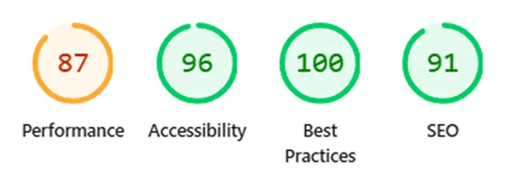
AFTER
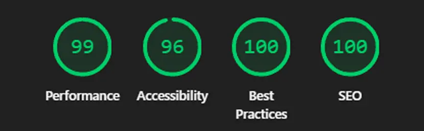
Evaluation and Testing
Before launch, every colour pairing in the redesign was validated against WCAG 2.1 standards using the WebAIM Contrast Checker. This covered the navbar text on the dark header, hero overlay text on the background image, and body text on the off-white page background. All three primary pairings passed at both AA and AAA levels. Screenshots of each result were kept as documented evidence of compliance.
Usability validation included 5 remote moderated sessions with users recruited from existing club members and local venue customers. Each participant performed task-based scenarios (check opening times, locate membership details, under-35 offers, and find directions), while notes were recorded on task success, time parsing, and content readability. Issues were addressed in a follow-up iteration.
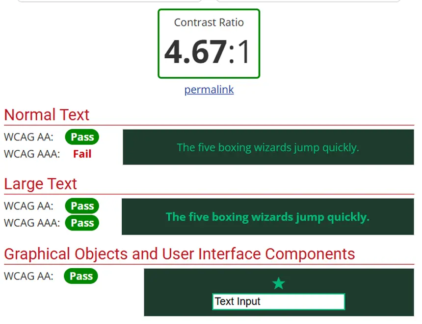
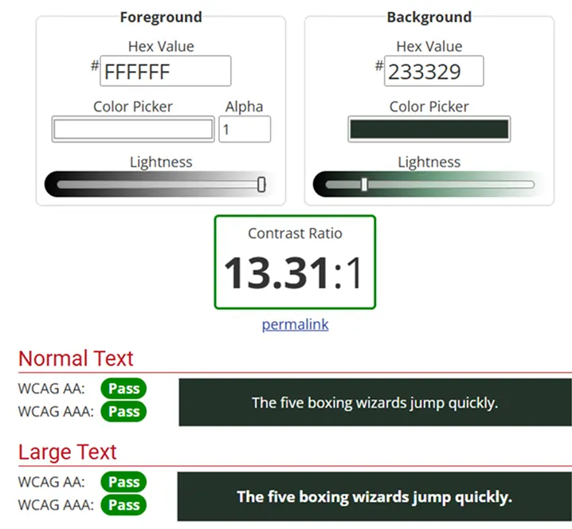
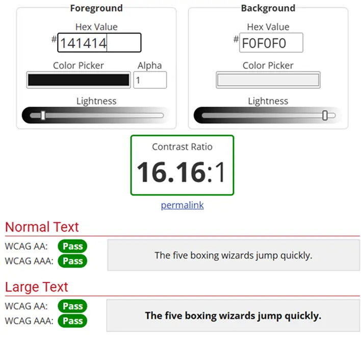
Version Control
Development tracked with Git throughout. Regular commits provide a clean, documented record of progress.
View on GitHub ↗Final Outcome
The redesigned 22 Club website gives visitors a significantly cleaner, faster, and more accessible experience, making key information easy to find on any device.
- Improved Navigation
Higher contrast nav with clearly visible links across all screen sizes.
- Clear Content Structure
Logical hierarchy: facilities, hours and location easy to scan.
- Mobile Responsive
Fully responsive across all screen sizes, no broken elements.
- WCAG Compliant
AA and AAA contrast met. Semantic HTML for screen readers.
- Performance Improved
WebP images and simplified animations lifted Lighthouse scores.
- User-Centred Design
Every decision anchored to Daniel's (persona's) needs.